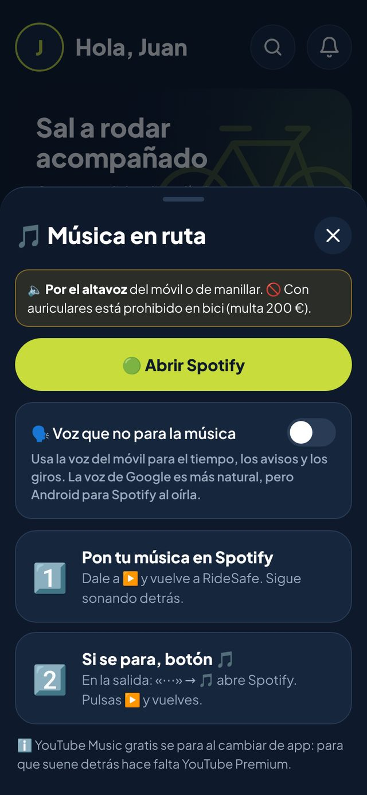

🎵 Música en ruta, por el altavoz y sin cortar los avisos
Muchos nos pedíais música para hacer más amenas las rutas. Ya está en Perfil → 🎵 Música en ruta y, durante la salida, en el botón «⋯» → 🎵.
Funciona con Spotify: pones tu música y vuelves a RideSafe. Si se para, el botón 🎵 la vuelve a abrir. Y con la opción «Voz que no para la música», el tiempo, los giros y los avisos del grupo se oyen sin cortar la canción.
⚠️ Siempre por el altavoz del móvil o de manillar: en España está prohibido ir en bici con auriculares (Reglamento General de Circulación, art. 18.2).
